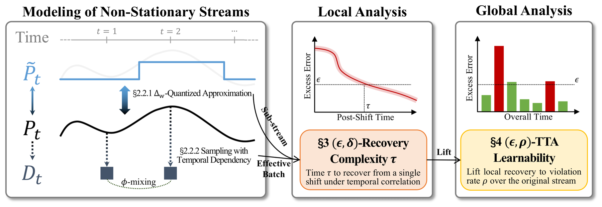

Test-time adaptation (TTA) aims to adapt models to maintain reliable performance on non-stationary test streams without requiring labeled data. Despite its empirical success, the learnability of TTA under non-stationary streams remains unexplored. A key challenge is the lack of a principled theoretical framework that simultaneously aligns with the TTA objective and captures both continuously evolving distribution shifts and intrinsic information constraints. To address this gap, we propose the first theoretical framework for studying the learnability of TTA and introduce (ε, δ)-Recovery Complexity and (ε, ρ)-TTA Learnability. Recovery complexity measures the post-shift time needed to maintain excess risk below a target level with high probability, and is further extended to TTA learnability, which measures the long-term reliability of TTA. Within this framework, we introduce a novel discrete surrogate for non-stationary test streams, enabling a unified and tractable analysis of both gradual and abrupt shifts. We derive order-wise matching lower and upper bounds on recovery complexity, revealing fundamental limits of TTA and an intrinsic adaptivity–information trade-off. These results provide unified learnability guarantees for TTA that complement regret-based analyses.

Test-time adaptation adapts a source model to distribution shifts at test time using only unlabeled data through a proxy loss (e.g., entropy), and has demonstrated empirical success across vision, tabular and language domains. Yet recent studies show that TTA can silently fail under complex, non-stationary streams — motivating a theoretical understanding of when TTA can remain reliable.
Existing theory falls short on two fronts: (i) online-learning regret controls only average performance, not the per-step, post-shift reliability TTA demands; and (ii) prior TTA analyses rely on assumptions about specific algorithms or label availability, none of which jointly handles unlabeled supervision, non-stationarity, and temporal correlation. This work asks: when is TTA even learnable?
We model the test stream $\mathcal{S}=\{D_t\}_{t=1}^T$ along two complementary axes — a global distribution-shift axis and a local temporal-correlation axis — captured by two analytically tractable assumptions.
Global · Δ_W-Quantized Distribution Shift
We adopt the Wasserstein-1 distance on $\mathcal{X}\times\mathcal{Y}$ to discretize the continuous trajectory $\{\mathcal P_t\}$ into a bounded piecewise-constant surrogate at resolution $\Delta_W$, which unifies gradual and abrupt shifts. The number of shifts is bounded by the path variation $V_T$:
Local · φ-Mixing Temporal Dependence
We measure the strength of temporal dependence by a $\phi$-mixing coefficient with geometric decay $\phi(i)\le\varrho^{i}$. Under this condition, temporal correlation effectively shrinks the batch size:
Perfect adaptation is unattainable when the proxy loss $\psi$ does not coincide with the task loss $\ell$. We therefore compete against the best proxy-optimal model within a local neighborhood $\mathcal N_r(\theta_1)$ of the source parameters, and take the resulting excess risk $\mathcal E_t$ as the central quantity throughout:
Our analysis hinges on a local (α, ζ)-alignment between the proxy and task gradients — α > 0 is the alignment strength and ζ ≥ 0 an irreducible misalignment. This guarantees the proxy gradient carries a constructive descent signal for the task loss, which is the very foundation for TTA to be feasible:
We introduce (ε, δ)-Recovery Complexity to measure the minimum number of time steps required for a TTA algorithm to reduce — and keep — its excess risk below ε with probability at least 1−δ after a distribution shift. Unlike regret, this controls the length of unsatisfactory periods.
We establish order-wise matching minimax lower and upper bounds:
The matching bounds pin down what fundamentally governs recovery:
Together, these expose an intrinsic adaptivity–information trade-off at the heart of TTA.
A problem is (ε, ρ)-learnable if some algorithm keeps the fraction of time steps violating the target ε below ρ, formalizing long-term reliability over the entire stream:
We bridge local recovery to global learnability: faster recovery or fewer shifts translate directly into a smaller violation rate ρ — a strong transfer principle.
Finally, (ε, ρ)-learnability implies a bound on the expected cumulative dynamic regret, $\mathrm{Reg}(T) \le T(\epsilon + M\rho)$. This clarifies both the connection and the two intrinsic differences from online learning: persistent shifts ($\Delta_W=\Omega(1)$) force linear regret, and unlabeled supervision injects an alignment bias no recovery time can remove — while in the benign regime ($\Delta_W\to 0$) we recover the classical sublinear $o(T)$ regret.
We introduced the first learnability framework for test-time adaptation under unlabeled non-stationary streams, modeling global shifts via a quantized Wasserstein approximation and local dependence via a $\phi$-mixing process. Within this framework, we defined (ε, δ)-Recovery Complexity and derived nearly matching minimax lower and upper bounds, revealing how proxy alignment, target accuracy, and batch size govern recovery. Building on this, we introduced (ε, ρ)-TTA Learnability and connected it to dynamic regret, showing that persistent shifts force linear regret and that unlabeled supervision incurs an intrinsic cumulative cost. We hope this framework provides a principled foundation for future theoretical and algorithmic developments in test-time adaptation.
Takeaway. Recovery complexity is the building block of TTA learnability — it pins down when adaptation is possible and what fundamentally limits it.
This research was supported by the Jiangsu Science Foundation (BK20243012, BG2024036, BK20232003), the National Natural Science Foundation of China (Grant No. 624B2068, 62576162), the Fundamental Research Funds for the Central Universities (022114380023), and the "111 Center" (No. B26023).
@inproceedings{zhou26learnability,
author = {Zhi Zhou and Ming Yang and Shi-Yu Tian and Kun-Yang Yu and Lan-Zhe Guo and Yu-Feng Li},
title = {On the Learnability of Test-Time Adaptation: A Recovery Complexity Perspective},
booktitle = {Proceedings of the 43rd International Conference on Machine Learning (ICML)},
year = {2026}
}